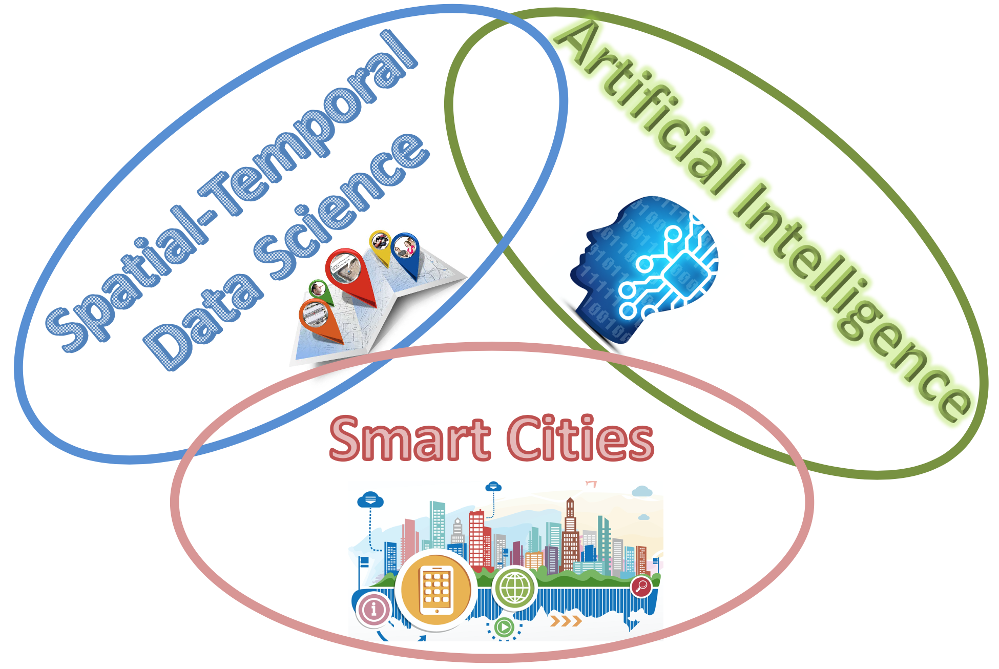

⧫ News
- [Award] 11/2024: Our 2014 SIGSPATIAL paper was selected as a runner-up for the 2024 10-Year Impact Award for SIGSPATIAL Conference.
- [TPC] 01/2024: PC for ICML 2024, KDD 2024, and IJCAI 2024.
- [Paper] 12/2023: Two papers were accepted by SDM 2024.
- [Paper] 09/2023: Three papers were accepted by ICDM 2023, and two papers by SIGSPATIAL 2023. Congratulations to Mingzhi.
- [TPC] 08/2023: SPC for SDM 2024, and PC for ICLR 2024.
- [Students] 7/2023: Congrats to Xin joining CS at San Diego State University as an assistant professor.
- [Paper] 5/2023: One paper was accepted by KDD 2023. Congratulations to Mingzhi and Xin.
- [TPC] 03/2023: PC for NeurIPS 2023, and SIGSPATIAL 2023.
- [TPC] 12/2022: PC for ICML 2023, IJCAI 2023, and KDD 2023, ICDM 2023.
- [Paper] 12/2022: Two papers were accepted by SDM 2023. Congratulations Xin and Yingxue.
- [Paper] 11/2022: One paper was accepted by AAAI 2023.
- [Paper] 10/2022: One paper was accepted by WACV 2023. Congratulations to Guojun and Xin.
- [Paper] 08/2022: Three papers were accepted by ICDM 2022, and one paper was accepted by SIGSPATIAL 2022.
- [TPC] 03/2022: PC for NeurIPS 2022, ICDM 2022, SIGSPATIAL 2022.
- [Students] 02/2022: Congrats to Yingxue joining CS at SUNY Binghamton University as an assistant professor.
- [TPC, Paper] 12/2021: PC for ICML 2022, KDD 2022 and one paper was accepted by SDM 2022.
- [Paper] 09/2021: One paper was accepted by NeurIPS 2021. Congratulations to Guojun.
- [Paper] 08/2021: Three papers were accepted by ICDM 2021. Congrats to Xin, Yingxue, and Guojun.
- [TPC] 08/2021: SPC for AAAI 2022 and PC for CVPR 2022.
- [Paper] 08/2021: Five papers were accepted by SIGSPATIAL 2021, ACM TIST, and IEEE CDC 2021. Congrats to Yingxue, Xin, Huimin, and Menghai.
- [Talk] 05/2021: I gave a talk in MassDOT Transportation Innovation Conference.
- [Paper] 05/2021: One paper was accepted by KDD 2021. Congratulations to Huimin.
- [Paper] 05/2021: Two papers were accepted by ACM TIST.
- [TPC] 4/2021 TPC for NeurIPS 2021, ICDM 2021, SIGSPATIAL 2021, ICLR 2022.
- [TPC] 12/2020 TPC for KDD 2021, and ICML 2021.
- [Paper] 10/2020: Two papers were accepted by IEEE Transactions on Big Data. Congrats to Menghai and Xin.
- [Paper] 09/2020: Two papers were accepted by NeurIPS 2020. Congratulations to Xin.
- [Award] 08/2020: $2 million NSF grant from NSF SCC program.
- [Paper] 08/2020: Six papers were accepted by ICDM 2020 (2), SIGSPATIAL 2020 (3), and CIKM 2020 (1).
- [TPC] 07/2020 TPC for ICLR 2021, AAAI 2021, SDM 2021, WWW 2021, and Senior PC for IJCAI 2021.
- [Award] 06/2020: $529k NSF CAREER Award! Thanks, NSF.
- [NSF] IIS-1942680, "CAREER: Spatial-Temporal Imitation Learning". (sole PI), 7/2020-6/2025.
- [NSF] CNS-1952085, "SCC-IRG Track 1: Empowering and Enhancing Workers Through Building A Community-Centered Gig Economy". (Subawarded to PI Li at WPI), 10/2020-9/2024.
- [NSF] DGE-2021871, "NRT-HDR: Data-Driven Sustainable Engineering for a Circular Economy". (Senior Personnel), 7/2020-8/2025.
- [NSF] CNS-1657350, "CRII: CPS: CityLines: Designing Urban Hub-and-Spoke Transportation System with Data-Driven Cyber-Control", NSF CRII award from CPS program, 8/2017-7/2020.
- [NSF] CMMI-1831140, "SCC: Leveraging Autonomous Shared Vehicles for Greater Community Health, Equity, Livability, and Prosperity (HELP)". (Subawarded to PI Li at WPI), 9/2018-8/2023.
- [Industry] DiDi Chuxing Research, "User Behavior Analysis for Ride-Hailing Services", 3/2018-3/2020.
- NeurIPS 2021
- SBO-RNN: Reformulating Recurrent Neural Networks via Stochastic Bilevel Optimization
- NeurIPS 2020
- f-GAIL: Learning f-Divergence for Generative Adversarial Imitation Learning
- NeurIPS 2020
- Adaptive Reduced Rank Regression
- KDD 2021
- MapRec: Map-Constrained Trajectory Recovery via Seq2Seq Multi-task Learning
- KDD 2020
- xGAIL: Explainable Generative Adversarial Imitation Learning for Explainable Human Decision Analysis
- KDD 2020
- Curb-GAN: Conditional Urban Traffic Estimation through Spatio-Temporal Generative Adversarial Networks
- KDD 2020
- ST-SiameseNet: Spatio-Temporal Siamese Networks for Human Mobility Signature Identification
- ICDM 2021
- DAC-ML: Domain Adaptable Continuous Meta-Learning for Urban Dynamics Predictio
- ICDM 2021
- Deep Incremental RNN for Learning Sequential Data: A Lyapunov Stable Dynamical System
- ICDM 2021
- C3-GAN: Complex-Condition-Controlled Urban Traffic Estimation through Generative Adversarial Networks
- ICDM 2020
- TrajGAIL: Trajectory Generative Adversarial Imitation Learning for Long-term Decision Analysis
- ICDM 2020
- cST-ML: Continuous Spatial-Temporal Meta-Learning for Traffic Dynamics Prediction
- ICDM 2019
- Unveiling Taxi Drivers’ Strategies via cGAIL - Conditional Generative Adversarial Imitation Learning
- ICDM 2019
- TrafficGAN: Off-Deployment Traffic Estimation with Traffic Generative Adversarial Networks
- SDM 2019
- (Best Paper Award!)Dissecting the Learning Curve of Taxi Drivers: A Data-Driven Approach
- SIGSPATIAL 2021
- Learning Decision Making Strategies of Non-experts: A NEXT-GAIL Model for Taxi Drivers
- SIGSPATIAL 2021
- ICFinder: A Ubiquitous Approach to Detecting Illegal Hazardous Chemical Facilities with Truck Trajectories
- SIGSPATIAL 2020
- Is Reinforcement Learning the Choice of Human Learners? A Case Study of Taxi Drivers
- SIGSPATIAL 2020
- COVID-GAN: Estimating Human Mobility Responses to COVID-19 Pandemic through Spatio-Temporal Conditional Generative Adversarial Networks
- SIGSPATIAL 2020
- Cycling-Net: A Deep Learning Approach to Predicting Cyclist Behaviors from Geo-Referenced Egocentric Video Data
- SIGSPATIAL 2019
- Effective Recycling Planning for Dockless Sharing Bikes
⧫ Research Projects
(full list of awards/grants.)On-Going Projects:
⧫ Recent Publications
-
(full list of publications, Google Scholar, DBLP)
⧫ Sponsors
Sincere gratitude to our sponsors from NSF, DiDi Chuxing, Pitney Bowes Inc., and NVIDIA.


⧫ Research Interests:

⧫ Recent Professional Service
-
Full list of professional service
- Panelist
- NSF 2017-2022
- Proceedings Chair
- ACM SIGSPATIAL 2020-21
- Pub Chair
- ACM SIGSPATIAL 2017-18
- TPC
- ICLR 2024
- SPC
- SDM 2024
- TPC
- NeurIPS 2023
- TPC
- KDD 2023
- TPC
- ICML 2023
- TPC
- IJCAI 2023
- TPC
- ICLR 2023
- TPC
- ICDM 2023
- TPC
- SIGSPATIAL 2023
⧫ Media Coverage
- 5/2017
- Telegram & Gazette News
- 3/2017
- WPI Research News
- 3/2017
- WBJournal Online
⧫ Professional Appointments
- 2021-now
- Associate Professor, WPI
- 2015-21
- Assistant Professor, WPI
- 2015
- Postdoc, U of Minnesota
- 2013-14
- Researcher, Noah's Ark Lab, Hong Kong
- 2012
- Research Intern, Bell Lab, NJ
- 2011
- Research Intern, Microsoft Research, Beijing
- 2009-13
- Research Assistant, U of Minnesota
⧫ Education
- Ph.D.
- Computer Science, University of Minnesota - Twin Cities, 2013
- Ph.D.
- Electrical Engineering, Beijing U of Posts and Telecommunications, 2009
- MS
- Electrical Engineering, Sichuan University, 2006
- BS
- Electrical Engineering, Sichuan University, 2003